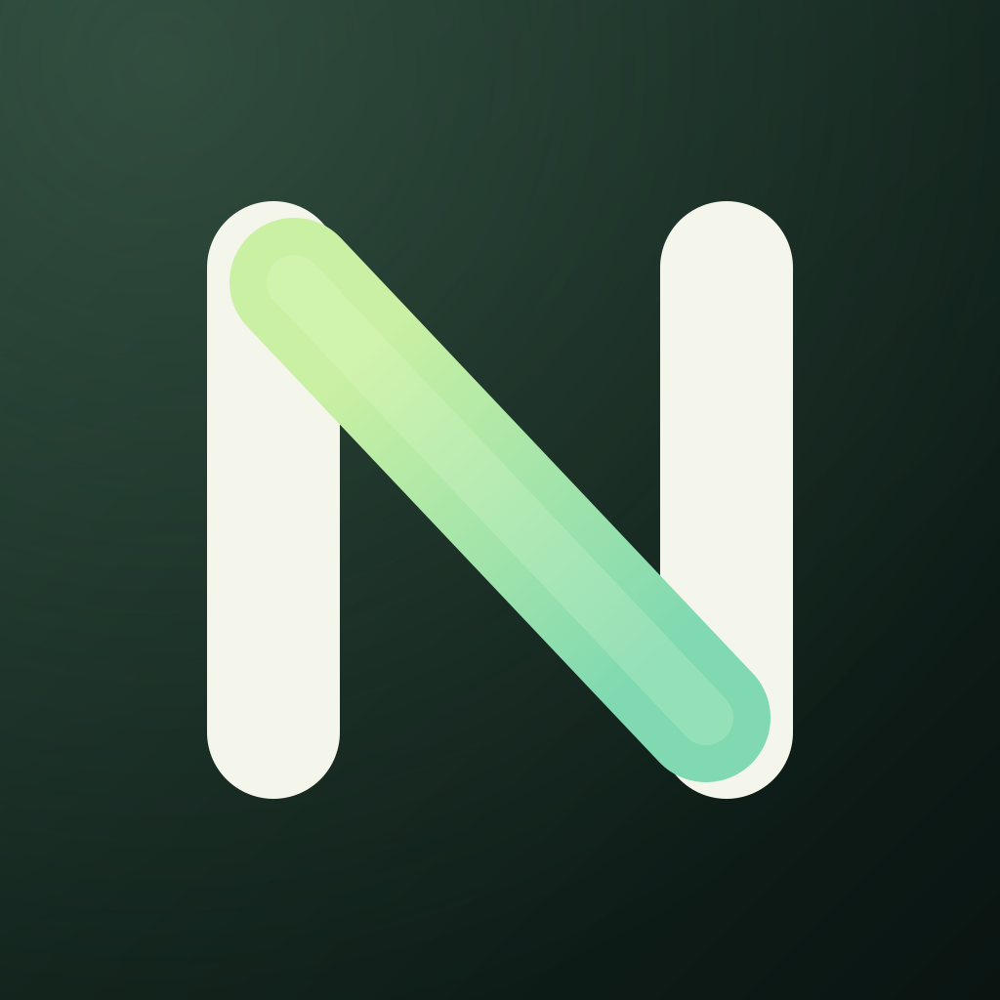

Dinero con contexto
Registra ingresos, gastos, pagos, tarjetas y movimientos en pesos colombianos. Consulta lo urgente desde el inicio.

Nexo Descargar para PCTu espacio, en orden
Nexo reúne tu dinero, tus pendientes y tu Centro Personal en una aplicación para Windows. Entra, mira lo que viene y sigue con tu día.
Aplicación de escritorio · pesos colombianos · hora de Colombia
Lo que necesitas ver, sin buscar entre pantallas.
Una sola aplicación
Las herramientas están juntas, con espacio para trabajar a tu manera.
Registra ingresos, gastos, pagos, tarjetas y movimientos en pesos colombianos. Consulta lo urgente desde el inicio.
Organiza agenda, universidad, contenido y guiones. Decide cuándo quieres una notificación o alarma.
Escribe o dicta una idea para convertirla en registros y recordatorios. Tú corriges y confirmas antes de guardar.
Nexo para Windows
Un instalador con el mismo nombre para cada versión. La aplicación te avisará al abrirla cuando haya una versión más reciente. Tus datos permanecen en tu perfil de Windows.
En tres pasos
Usa el botón de esta página. El archivo se llama siempre Nexo-Instalador.exe.
Sigue el asistente. Nexo crea un acceso directo en el escritorio y en Inicio.
Si aparece «Actualización disponible», descarga la nueva versión y ejecuta de nuevo el instalador. La carpeta de datos sigue intacta.
Antes de empezar
La versión de iPhone se instala actualmente como prueba personal mediante un IPA firmado para tu dispositivo. Esta página se centra en Windows.
No. Esta página es estática y solo muestra la descarga. Tus datos no se suben aquí. La sincronización de Nexo se configura dentro de la aplicación.
Nexo comprueba si hay una versión nueva y te avisa. Por ahora, tú decides cuándo descargar y ejecutar el nuevo instalador.
Las versiones de Windows usan la misma carpeta de datos del perfil. Aun así, conviene exportar un respaldo cifrado antes de una actualización importante.